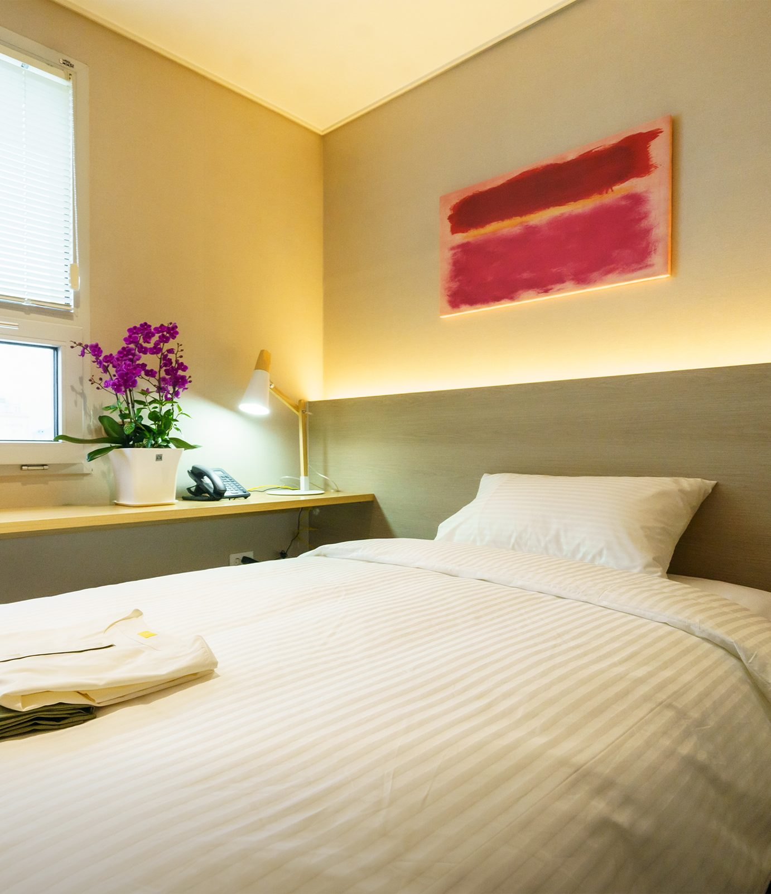
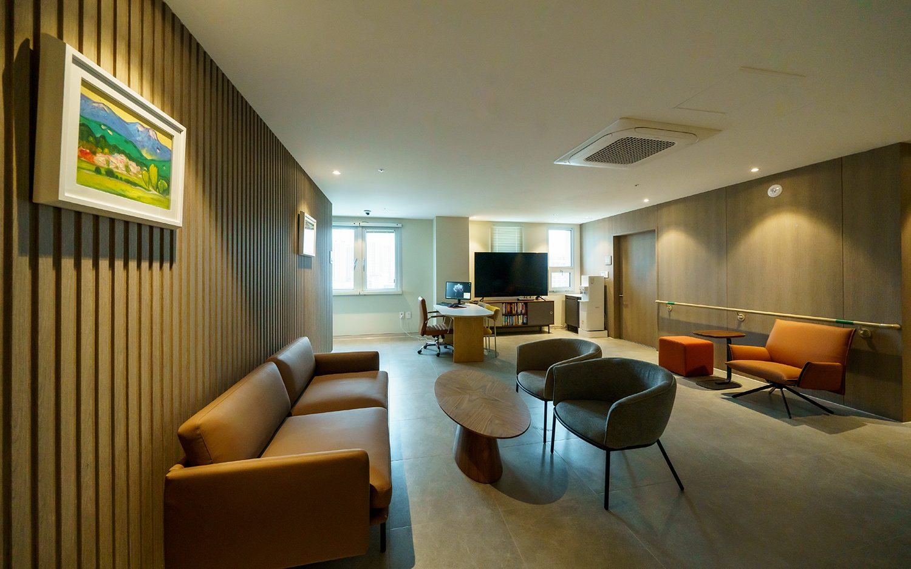
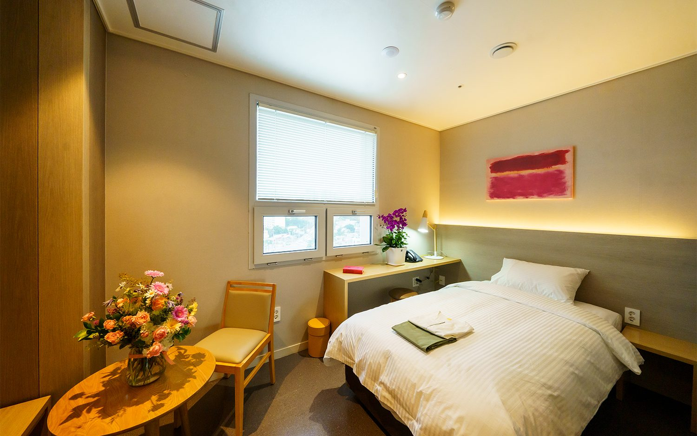

입원 안내
입원 서류는 소견서 또는 진료기록지 중 하나, 신분증, 피검사 결과지입니다. 소견서 작성이 어려우면 현재까지의 진료 기록이 담긴 진료기록지만 발급받아도 됩니다. 입원을 결정한 환자·보호자가 서류, 첫날, 병실, 간병 경계, 야간 대응을 상담 전에 확인하는 페이지입니다.

- 서류
- 소견서 또는 진료기록지 중 하나 · 신분증 · 피검사 결과지
- 병실
- 1인실 위주로 구성
- 면회
- 오시는 길·면회 안내에서 확인
- 야간
- 의료진 24시간 상주 · 당직 체계로 확인·처방
- 문의
- 원내 상담실 · 카카오톡 채널 · 062-439-1000
입원 서류
입원 서류는 소견서 또는 진료기록지 중 하나, 신분증, 피검사 결과지입니다.

소견서 작성이 어려우면 현재까지의 진료 기록이 담긴 진료기록지만 발급받아도 됩니다.
진료기록지는 환자가 요청하면 치료병원 의무기록실에서 발급받는 서류입니다.
입원 절차
입원 상담과 입원 예약은 원내 상담실에서 안내합니다.
[디렉터 확인] 입원 절차 문장. 상담, 서류, 입원일 확정, 첫날 진료까지의 흐름을 적은 확정 문장이 원자료에 없습니다. 순서와 각 단계의 주체를 확정해 주시면 이 자리에 순서대로 넣습니다.
[디렉터 확인] 지참약 안내 문장. 「타 병원 처방약은 목록·용법·기간을 기록해 원내 처방과 함께 관리합니다」(오더액팅 콘텐츠자산 §3 기반 작성, 의료진 확인 전)와 다른 병원 외래 진료 의뢰서 절차 표현(같은 자산 §6)을 함께 확정해 주시면 이 자리와 자주 묻는 질문 「지금 먹는 약을 가져가도 되나요?」에 같은 문장을 넣습니다.
입원 첫날
입원 첫날부터 식사 이야기를 나눕니다.
[디렉터 확인] 입원 기간 안내 문장. 누가 어떤 시점에 정하는지의 확정 문장이 입원 안내 자료에는 없습니다(기간 숫자는 쓰지 않음). 갑상선암 페이지의 「입원 기간은 첫날 진료에서 함께 정합니다」를 모든 암종에 공통으로 써도 되는지 확정해 주시면 이 자리와 자주 묻는 질문에 같은 문장을 넣습니다.
[디렉터 확인] 준비물과 병실 생활 규칙 안내 문장. 제공 품목(수건·세탁)과 소음·소등 규칙.
병실
병실은 1인실 위주로 구성되어 있습니다.


가급적 1인실을 사용하도록 하고 있으며, 1인실 입원은 외부 접촉을 줄이기 위해 시행하는 조치입니다.
[디렉터 확인] 병실 종류와 설비 안내 문장. 4인실 존재 여부와 병실 설비(개별 샤워실·화장실·냉장고·옷장·바닥 난방 등) 원내 사실.
[디렉터 확인] 입원 대기 안내 문장. 원하는 병실이 없을 때 대기 기준·연락·대안을 어떻게 안내하는지의 운영 사실(4채널 실측 ④ 16번, 오더액팅 콘텐츠자산 §6 1인실 배정 지연 사례). 확정 전에는 문장을 쓰지 않습니다.
[디렉터 확인] 입원 중 불편 접수 경로 문장. 불편한 점을 말하면 누구에게 어떻게 전달되는지의 운영 사실(4채널 실측 ③ 소음·병실 생활 규칙 행, ④ 12번). 확정 전에는 문장을 쓰지 않습니다.
병실료는 비급여·비용 페이지의 표에서 확인하실 수 있습니다.
식사
항암식부터 위절제식·저잔사식·저요오드식까지, 환자 상태에 맞춘 치료식을 제공합니다. [디렉터 확인] 「저잔사식」「저요오드식」 첫 등장 괄호 풀이 문장(D2 4-1 H-31). 원자료에 풀이 문장이 없어 확정 문장은 그대로 두었습니다. 검토 의료진이 풀이를 확정하면 이 자리에 괄호로 넣습니다.

입원 첫날부터 식사 이야기를 나눕니다.
오후 3시에는 10층 스카이라운지에서 차를 제공합니다. [디렉터 확인] 항암주스 명칭·자연차 표기를 홈페이지에 쓸지
특식데이에는 식당까지 오시기 어려운 날에도 병실에서 같은 한 끼를 드실 수 있도록 준비합니다. [디렉터 확인] 특식데이 병실 제공 방식
[디렉터 확인] 아침 식단의 샐러드 안내 문장. 영양사 수·샐러드 44종 표기 여부.
입원 중 치료병원 외래 진료
입원 중 치료병원 외래 진료와 진료의뢰서 안내는 단기입원·외래 안내에서 확인하실 수 있습니다.
수술 부위 관리는 수술한 병원의 지침을 그대로 이어받아 간호팀 및 주사·상처관리팀이 주기적으로 확인합니다. [디렉터 확인] 「매일 확인」 대 「주기적으로 확인」. 발행정본 B-1은 「매일 확인」을 금지하므로 「주기적으로 확인」으로 두었습니다. 「매일 확인」을 살리려면 B-1 개정이 먼저 필요합니다.
[디렉터 확인] 「케모포트」 첫 등장 괄호 풀이 문장(D2 4-1 H-31). 원자료에 풀이 문장이 없어 확정 문장은 그대로 두었습니다. 검토 의료진이 풀이를 확정하면 아래 문장의 첫 「케모포트」 뒤에 괄호로 넣습니다.
케모포트의 입원 중 수액 및 약물 투여·소독·바늘 관리는 치료병원 지침을 그대로 지켜 원내 의료진 및 주사·상처관리팀이 살핍니다.
케모포트를 통한 항암제 투여 중 입원 시에는 케모포트 관리 및 제거를 치료병원 지침에 따라 시행합니다.
치료병원 진료가 필요하다고 판단되면 안내해 드립니다.
이동·교통 문의는 병원에 문의해 주세요.
간병 경계
하일렌요양병원은 회복하는 곳입니다.
하일렌요양병원에는 간병사와 간병비가 없습니다.
장기간 간병이 필요하시면 일반 요양병원을 안내해 드립니다.
[디렉터 확인] 보호자 없이 입원할 수 있는지와 원내 간병 체계 안내 문장. 간병 체계 확정 문장(보호자 동반 여부 포함).
면회
면회 기준과 주소·교통은 오시는 길·면회 안내에서 확인하실 수 있습니다.

야간 대응
의료진이 24시간 상주하고 당직 체계로 확인·처방합니다.
원내에서는 혈액검사 및 흉부 엑스레이 촬영을 하고, 당일 결과를 주치의가 확인합니다.
하일렌요양병원에는 자체 응급실이 없습니다.
응급 상황은 발견, 초기 안정화, 상급 치료병원으로 신속 전원의 순서로 대응합니다.
[디렉터 확인] 밤에 열이 날 때 연락 순서와 보호자 통지 절차 문장. 환자와 보호자가 누구에게 먼저 연락하는지, 의료진 확인 뒤 보호자에게 어떻게 알리는지의 운영 사실(4채널 실측 ③ 야간 발열·응급실 이송 행, ④ 11번). 확정 전에는 문장을 쓰지 않습니다.
자주 묻는 질문
입원할 때 어떤 서류가 필요한가요?
입원 서류는 소견서 또는 진료기록지 중 하나, 신분증, 피검사 결과지입니다. 소견서 작성이 어려우면 현재까지의 진료 기록이 담긴 진료기록지만 발급받아도 됩니다.
병실은 어떻게 되어 있나요?
병실은 1인실 위주로 구성되어 있습니다. 가급적 1인실을 사용하도록 하고 있으며, 1인실 입원은 외부 접촉을 줄이기 위해 시행하는 조치입니다.
입원 중에도 치료병원 외래를 계속 다닐 수 있나요?
입원 중 다른 병원 외래 진료에 필요한 진료의뢰서는 원내 주치의가 작성합니다. [디렉터 확인] 치료병원 외래 일정 유지 구절의 원내 확정 여부(D2 결정 30번). 확정되면 본문과 같은 문장을 앞에 넣고 구조화 데이터에도 같은 항목을 되살립니다.
지금 먹는 약을 가져가도 되나요?
[디렉터 확인] 지참약 문답. 「타 병원 처방약은 목록·용법·기간을 기록해 원내 처방과 함께 관리합니다」(오더액팅 콘텐츠자산 §3 기반 작성, 의료진 확인 전)가 확정되면 이 자리와 「입원 절차」 절에 같은 문장을 넣습니다.
식사는 어떻게 나오나요?
항암식부터 위절제식·저잔사식·저요오드식까지, 환자 상태에 맞춘 치료식을 제공합니다. 입원 첫날부터 식사 이야기를 나눕니다.
보호자 면회는 언제 할 수 있나요?
면회 기준은 오시는 길·면회 안내에서 확인하실 수 있습니다.
장기간 간병이 필요한 경우에도 입원할 수 있나요?
하일렌요양병원은 회복하는 곳입니다. 장기간 간병이 필요하시면 일반 요양병원을 안내해 드립니다.
밤에 아프면 누가 봐주나요?
의료진이 24시간 상주하고 당직 체계로 확인·처방합니다. 하일렌요양병원에는 자체 응급실이 없습니다. 응급 상황은 발견, 초기 안정화, 상급 치료병원으로 신속 전원의 순서로 대응합니다.
입원 상담과 입원 예약은 원내 상담실에서 안내합니다. 궁금한 점 있으시면 언제든 물어보세요. [디렉터 확인] 전화·카카오 응대 가능 시간, 부재중일 때 재연락 방식(D2 9-1 신설 행)
제공 하일렌요양병원 · 검토 [디렉터 확인] 검토 의료진 · 검토일 [디렉터 확인] 검토일 · 갱신 2026-10-05